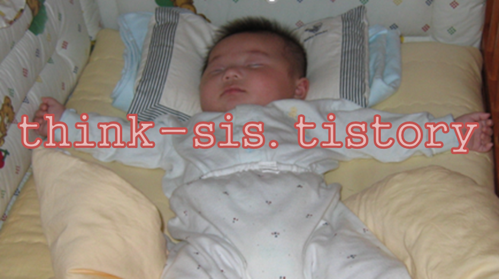
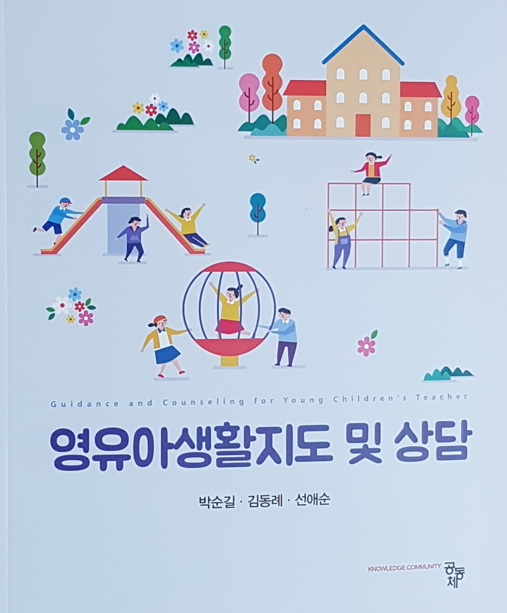

수면습관 지도의 의의
수면은 신체적, 정신적으로 피로한 몸을 회복시키고 새로운 에너지를 충전시키는 근원이다.
생후 1개월 동안 영아는 하루의 대부분인 약 16시간 정도 잠을 잔다. 6개월부터 중추신경계의 발달로 수면시간은 13~15시간 정도로 줄어들며, 1~2세에는 12~14시간, 3~5세에는 10~12시간, 5세 이상은 10시간 정도의 수면이 필요하다.

아이가 활동량이 많은 경우는 낮잠이 필요하다.
건강과 성장을 위하여 저녁 취침 뿐만 아니라 하루에 한두 번 낮잠이 필요하다. 아이들은 점차 성장하면서 규칙적인 수면습관을 형성해야 한다. 아이가 잠을 푹 자지 못한 경우는 생활리듬이 규칙적이지 않아 신경질적인 성향을 나타내고, 심리적 불안 요소를 나타낸다.
아이는 놀이나 흥미 있는 일에 몰두할 때 수면을 거부하기도 한다.
아이에게 항상 적절한 시간을 정해 휴식과 수면을 취하도록 지도해야 한다. 아이가 잠을 깊이 자지 못하면 신경증, 식욕부진 등 건강과 밀접한 관련성이 있으므로 주의해야 한다.
1) 수면습관 지도 내용
• 일찍 자고 일찍 일어난다.
• 매일 8~10시간 정도 푹 자도록 한다.
• 잠투정을 하지 않도록 한다.
• 어른들께 인사를 하고 잠자리에 든다.
• 유아기에 접어들면 혼자서 잔다.
• 잠자기 전에 용변을 본다.
• 잠자기 전에 양치질과 세수를 한다.
• 잠자기 전에 음식을 먹지 않는다.
2) 수면습관 지도 시 유의사항
• 흥분 정도와 피곤 정도를 파악하고 조절한다.
• 숙면을 취할 수 있도록 하루일과를 계획하고 충분한 활동을 제공한다.
• 일정한 시간에 취침을 하도록 지도한다.
• 빛과 소음을 차단하고 아늑하고 편안한 환경을 구성한다.
• 수면을 도울 수 있는 조용한 음악이나 이야기를 들려준다.
• 잠을 자지 않을 경우 잠자기를 강요하지 않고 휴식을 취하도록 배려한다.
• 잠자리에 들기 전에 화장실에 다녀오는 습관을 가진다.
• 개인적인 애착물건이나 수면 욕구를 수용한다.

2021.10.24 - [분류 전체보기] - 배변습관 지도- 개인차에 따른 조절능력 형성
배변습관 지도- 개인차에 따른 조절능력 형성
배변습관 발달 아이는 18~24개월 정도가 되면 방광과 항문의 괄약근을 스스로 통제할 생리적 기능을 형성한다. 이 시기의 아이는 신체적으로 혼자 설 수 있고 변기에 관심을 갖게 된다. 특히 언어
think-sis.tistory.com